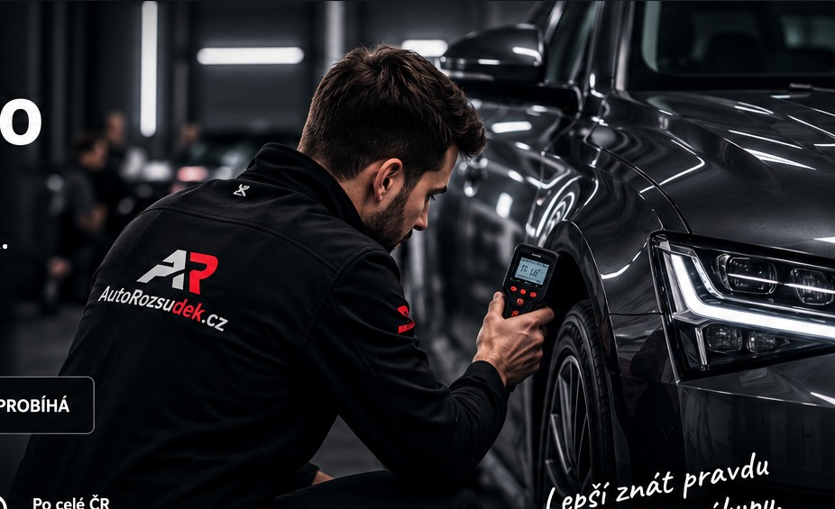
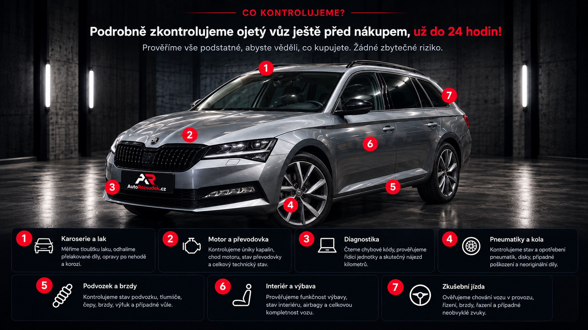
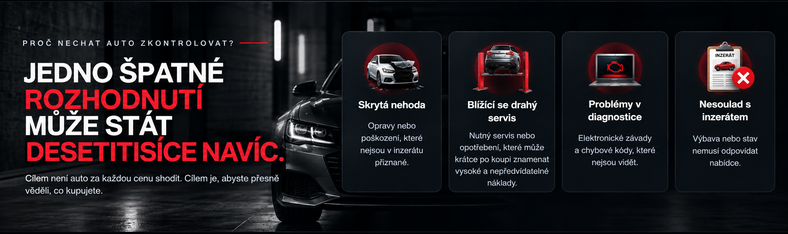
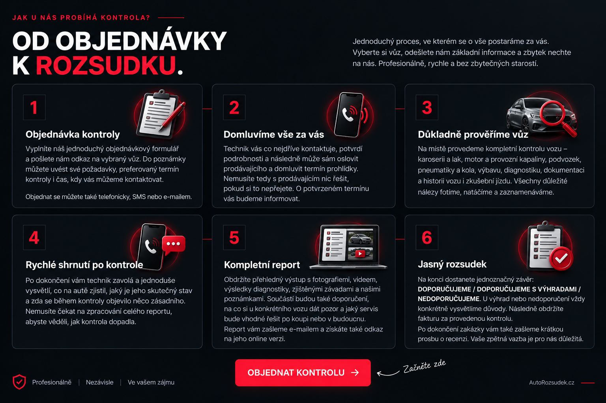

★★★★★
„Sem přijde skutečná zkušenost zákazníka s kontrolou vozu.“
Budoucí zákazníkNEZÁVISLÁ KONTROLA OJETÝCH VOZŮ
Prověříme ojetý vůz před koupí a řekneme vám, co prodávající možná neřekl. Nezávisle. Objektivně. Srozumitelně.




CO DOSTANETE?
Nejen „dobré / špatné“. Dostanete konkrétní nálezy, fotografie a srozumitelný závěr.
ZKUŠENOST ZÁKAZNÍKŮ
Reference doplníme po spuštění služby. Už teď je pro ně na webu připravené místo tak, aby později působily přirozeně a důvěryhodně.
„Sem přijde skutečná zkušenost zákazníka s kontrolou vozu.“
Budoucí zákazník„Reference nebudeme vymýšlet. Po spuštění sem vložíme pouze ověřené recenze.“
AutoRozsudek.cz„Cílem je ukázat reálný přínos kontroly před koupí konkrétního auta.“
Budoucí zákazníkKDO ZA TÍM STOJÍ?
AutoRozsudek.cz vzniká s jednoduchým cílem: dát kupujícímu před koupí co nejjasnější obraz o skutečném stavu vozu. Bez vazby na prodávajícího a bez tlaku auto za každou cenu koupit.
Kontrola má pomoci rozhodnout se s chladnou hlavou — ať už výsledkem bude koupit, vyjednávat o ceně, nebo od vozu odejít.
ČASTÉ DOTAZY
Nemusíte. Finální podobu služby nastavíme tak, aby bylo možné kontrolu provést i bez vaší osobní účasti a následně vám předat přehledný výstup.
Smyslem kontroly není vůz „shodit“. Dostanete nálezy a jasný závěr, podle kterého se můžete rozhodnout, zda koupit, vyjednávat, nebo od koupě ustoupit.
Primárně v Českých Budějovicích a okolí. Přesnou oblast dojezdu a případné cestovní podmínky doplníme před spuštěním.
PŘIPRAVUJEME SPUŠTĚNÍ
Objednávkový formulář, ceník a přesný rozsah dojezdu doplníme před ostrým spuštěním služby v Českých Budějovicích a okolí.